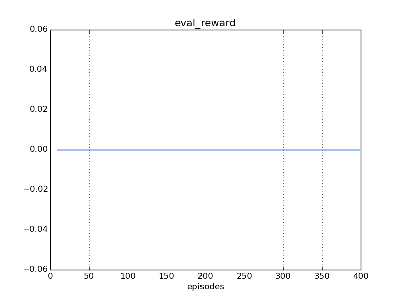
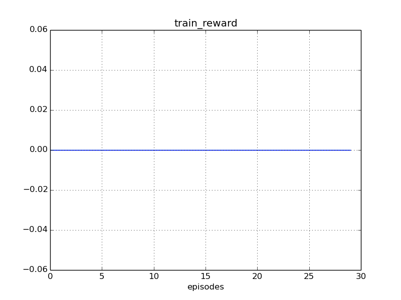
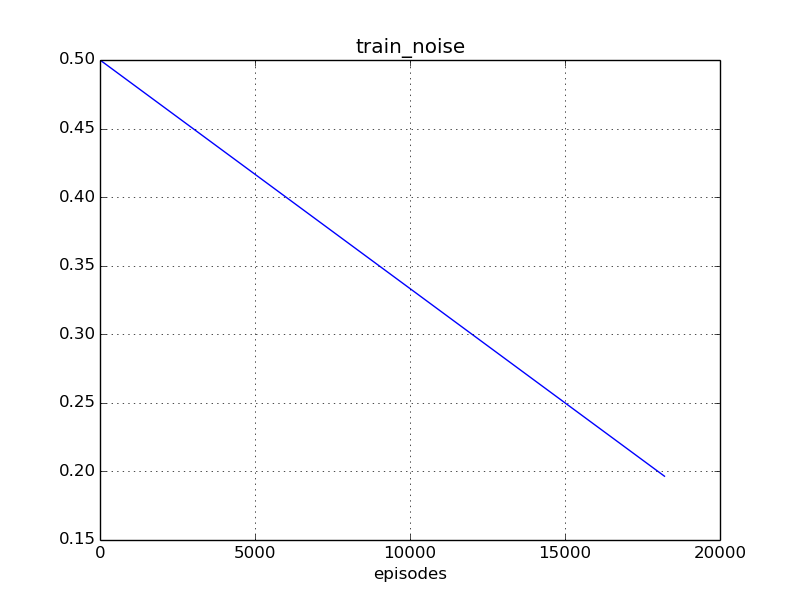
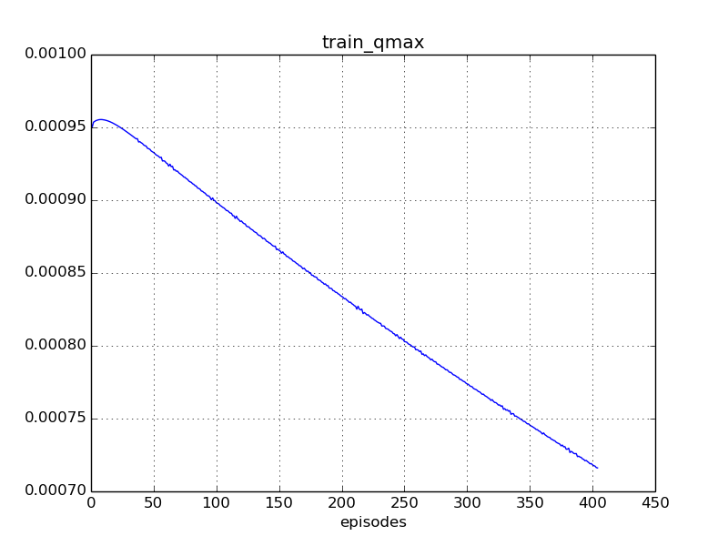

Experiment #train_tentacle
Reward: 0
Qmax: 0
Left: 08:24:43 (1%)
Report time: 2017-01-14 08:27:37
Host name: bernard
Configuration
Experiment:
exp.base_path: experiments/
exp.episodes: 30000
exp.id: train_tentacle
exp.logger_class: core.logger.Logger
exp.mind_class: tf.mind.TensorflowMind
exp.platform_class: tf.platform.TensorflowPlatform
exp.save_every_episodes: 200
exp.steps: 50
exp.world_class: zoo.scorpion.world.ScorpionWorld
Algorithm:
alg.batch_size: 128
alg.buffer_size: 100000
alg.noise_rate_method: linear_05_00
alg.noise_sigma: 0.1
alg.noise_theta: 0.01
Mind:
mind.evaluate_every_episodes: 10
Environment:
env.assets: ./assets/
env.episod_jpos_method: jpos_random_target
env.frame_skip: 2
env.id: Zoo:Mujoco:Scorpion-v1
env.init_every_episods: 10
env.reward_method: default_reward
env.step_jpos_method: jpos_do_noting
env.target_range_xz: [[-0.7, 0.7], [0.5, 1.0]]
env.world.agents: ['scorpion', 'ball']
env.world.scorpion.agents: ['tentacle', 'target']
env.world.scorpion.algorithm:
env.world.scorpion.class: zoo.scorpion.scorpion.ScorpionAgent
env.world.scorpion.inputs: ['ball_x', 'ball_y', 'ball_z']
env.world.scorpion.tentacle.algorithm:
env.world.scorpion.tentacle.inputs: ['target_x', 'target_z']
Reporting:
report.diagram_mean_frame: 50
report.refresh_html_every_secs: 30
report.summary_every_episodes: 20
report.write_every_episodes: 15
Instances
Experiment:
id: train_tentacle
work_path: experiments/train_tentacle
platform: TensorflowPlatform
world: ScorpionWorld:
env_id: Zoo:Mujoco:Scorpion-v1
model_path: ./assets/world.xml
total_act_dim: 6
env: ScorpionEnv:
model_path: /home/roman-ml/prj/rmus/zoo/zoo/scorpion/experiments/train_tentacle/environment/env_model.xml
sensors:
world.scorpion.sensor_head_pos [1]
world.scorpion.sensor_head_vel [1]
world.scorpion.tentacle.sensor_s1_pos [1]
world.scorpion.tentacle.sensor_s1_vel [1]
world.scorpion.tentacle.sensor_s2_pos [1]
world.scorpion.tentacle.sensor_s2_vel [1]
world.scorpion.tentacle.sensor_s3_pos [1]
world.scorpion.tentacle.sensor_s3_vel [1]
world.scorpion.target.sensor_x [1]
world.scorpion.target.sensor_z [1]
world.ball.sensor_x [1]
world.ball.sensor_y [1]
world.ball.sensor_z [1]
world.ball.sensor_vx [1]
world.ball.sensor_vy [1]
world.ball.sensor_vz [1]
world.ball.sensor_accelerometer [3]
actuators:
world.scorpion.actuator_head [-10 +10]
world.scorpion.actuator_target_x [-2 +2]
world.scorpion.actuator_target_z [-1 +2]
world.scorpion.tentacle.actuator_s1 [-2000 +2000]
world.scorpion.tentacle.actuator_s2 [-1500 +1500]
world.scorpion.tentacle.actuator_s3 [-500 +500]
sensors:
no
actuators:
no
observations:
sensor: world.scorpion.sensor_head_pos=[+1.53]
sensor: world.scorpion.sensor_head_vel=[+0.127]
inputs: world.scorpion.inputs_ball_x=[+0.818]
inputs: world.scorpion.inputs_ball_y=[+1.03]
inputs: world.scorpion.inputs_ball_z=[-4.8]
sensor: world.scorpion.tentacle.sensor_s1_pos=[+1.22]
sensor: world.scorpion.tentacle.sensor_s1_vel=[-3.92e-07]
sensor: world.scorpion.tentacle.sensor_s2_pos=[-2.1]
sensor: world.scorpion.tentacle.sensor_s2_vel=[-2.03e-06]
sensor: world.scorpion.tentacle.sensor_s3_pos=[+2.62]
sensor: world.scorpion.tentacle.sensor_s3_vel=[-1.98e-06]
inputs: world.scorpion.tentacle.inputs_target_x=[+0.244]
inputs: world.scorpion.tentacle.inputs_target_z=[+0.719]
sensor: world.scorpion.target.sensor_x=[+0.244]
sensor: world.scorpion.target.sensor_z=[+0.719]
sensor: world.ball.sensor_x=[+0.818]
sensor: world.ball.sensor_y=[+1.03]
sensor: world.ball.sensor_z=[-4.8]
sensor: world.ball.sensor_vx=[+0.358]
sensor: world.ball.sensor_vy=[+0.357]
sensor: world.ball.sensor_vz=[+0.00909]
sensor: world.ball.sensor_accelerometer=[-0.0597,-0.0595,-0.00152]
mind: TensorflowMind:
algorithm: DummyAlgorithm:
obs_dim: 24
act_dim: 0
agents:
world.scorpion: ScorpionAgent:
model_path: ./assets/scorpion.xml
alg_obs: [1.5333046416540701, 0.12688185669570856, 0.8178788607809393, 1.0334822822790994, -4.7989751378148249, 1.2223157257029489, -3.9243684644736811e-07, -2.0954596843146436, -2.0311827344905824e-06, 2.6197504058787402, -1.9782172970081382e-06, 0.243690633302034, 0.71901830322040838, 0.243690633302034, 0.71901830322040838]
alg_obs_dim: 15
alg_act_dim: 3
sensors:
world.scorpion.sensor_head_pos [1]
world.scorpion.sensor_head_vel [1]
actuators:
world.scorpion.actuator_head [-10 +10]
world.scorpion.actuator_target_x [-2 +2]
world.scorpion.actuator_target_z [-1 +2]
observations:
sensor: world.scorpion.sensor_head_pos=[+1.53]
sensor: world.scorpion.sensor_head_vel=[+0.127]
inputs: world.scorpion.inputs_ball_x=[+0.818]
inputs: world.scorpion.inputs_ball_y=[+1.03]
inputs: world.scorpion.inputs_ball_z=[-4.8]
sensor: world.scorpion.tentacle.sensor_s1_pos=[+1.22]
sensor: world.scorpion.tentacle.sensor_s1_vel=[-3.92e-07]
sensor: world.scorpion.tentacle.sensor_s2_pos=[-2.1]
sensor: world.scorpion.tentacle.sensor_s2_vel=[-2.03e-06]
sensor: world.scorpion.tentacle.sensor_s3_pos=[+2.62]
sensor: world.scorpion.tentacle.sensor_s3_vel=[-1.98e-06]
inputs: world.scorpion.tentacle.inputs_target_x=[+0.244]
inputs: world.scorpion.tentacle.inputs_target_z=[+0.719]
sensor: world.scorpion.target.sensor_x=[+0.244]
sensor: world.scorpion.target.sensor_z=[+0.719]
mind: TensorflowMind:
algorithm: RandomAlgorithm:
obs_dim: 15
act_dim: 3
agents:
world.scorpion.tentacle: MujocoAgent >>>> training <<<<:
model_path: ./assets/tentacle.xml
alg_obs: [1.2223157257029489, -3.9243684644736811e-07, -2.0954596843146436, -2.0311827344905824e-06, 2.6197504058787402, -1.9782172970081382e-06, 0.243690633302034, 0.71901830322040838]
alg_obs_dim: 8
alg_act_dim: 3
sensors:
world.scorpion.tentacle.sensor_s1_pos [1]
world.scorpion.tentacle.sensor_s1_vel [1]
world.scorpion.tentacle.sensor_s2_pos [1]
world.scorpion.tentacle.sensor_s2_vel [1]
world.scorpion.tentacle.sensor_s3_pos [1]
world.scorpion.tentacle.sensor_s3_vel [1]
actuators:
world.scorpion.tentacle.actuator_s1 [-2000 +2000]
world.scorpion.tentacle.actuator_s2 [-1500 +1500]
world.scorpion.tentacle.actuator_s3 [-500 +500]
observations:
sensor: world.scorpion.tentacle.sensor_s1_pos=[+1.22]
sensor: world.scorpion.tentacle.sensor_s1_vel=[-3.92e-07]
sensor: world.scorpion.tentacle.sensor_s2_pos=[-2.1]
sensor: world.scorpion.tentacle.sensor_s2_vel=[-2.03e-06]
sensor: world.scorpion.tentacle.sensor_s3_pos=[+2.62]
sensor: world.scorpion.tentacle.sensor_s3_vel=[-1.98e-06]
inputs: world.scorpion.tentacle.inputs_target_x=[+0.244]
inputs: world.scorpion.tentacle.inputs_target_z=[+0.719]
mind: TensorflowMind:
algorithm: DDPG_PeterKovacs
obs_dim: 8
act_dim: 3
buffer: ReplayBuffer:
buffer_size: 100000
num_experiences: 9750
episode: 194
agents:
no
world.scorpion.target: MujocoAgent:
model_path: ./assets/target.xml
alg_obs: [0.243690633302034, 0.71901830322040838]
alg_obs_dim: 2
alg_act_dim: 0
sensors:
world.scorpion.target.sensor_x [1]
world.scorpion.target.sensor_z [1]
actuators:
no
observations:
sensor: world.scorpion.target.sensor_x=[+0.244]
sensor: world.scorpion.target.sensor_z=[+0.719]
mind: TensorflowMind:
algorithm: DummyAlgorithm:
obs_dim: 2
act_dim: 0
agents:
no
world.ball: MujocoAgent:
model_path: ./assets/ball.xml
alg_obs: [0.8178788607809393, 1.0334822822790994, -4.7989751378148249, 0.35826957073148147, 0.35714082532609204, 0.0090921176051141223, -0.059711595121913583, -0.059523470887682013, -0.0015153529341862537]
alg_obs_dim: 9
alg_act_dim: 0
sensors:
world.ball.sensor_x [1]
world.ball.sensor_y [1]
world.ball.sensor_z [1]
world.ball.sensor_vx [1]
world.ball.sensor_vy [1]
world.ball.sensor_vz [1]
world.ball.sensor_accelerometer [3]
actuators:
no
observations:
sensor: world.ball.sensor_x=[+0.818]
sensor: world.ball.sensor_y=[+1.03]
sensor: world.ball.sensor_z=[-4.8]
sensor: world.ball.sensor_vx=[+0.358]
sensor: world.ball.sensor_vy=[+0.357]
sensor: world.ball.sensor_vz=[+0.00909]
sensor: world.ball.sensor_accelerometer=[-0.0597,-0.0595,-0.00152]
mind: TensorflowMind:
algorithm: DummyAlgorithm:
obs_dim: 9
act_dim: 0
agents:
no
logger: Logger:
saved_time: 00:00:00
train_history: 195
eval_history: 19
reporter: Reporter:
html_path: /home/roman-ml/prj/rmus/zoo/zoo/scorpion/experiments/train_tentacle/reporter/report.html
Progress
Episodes: 195
Steps: 9750
Total time: 08:28:01
spent: 00:03:18 (0%)
left: 08:24:43
Finish: 16:52:20 2017-01-14
Performance: 0.98 per sec
Results
Train reward: +0.00
Eval reward: +0.00
Diagrams



